Módulo 4:
Interfaz Gráfica 
1. Elementos Básicos de la Interfaz
Elementos de una Interfaz
Una interfaz gráfica debe contener elementos en los que se puedan definir etiquetas, campos de texto, botones, barras deslizadoras, etc.
A continuación mostraremos algunos elementos de la interfaz gráfica y las diferentes maneras de utilizarlos:
Etiqueta (Label)
La etiqueta nos ayuda a definir los campos de texto que tecleará el usuario, la clase para definida para esto es Label y existen diferentes maneras de construir una etiqueta:
Label (), Label (String str), Label (String str, int how).
El primer constructor crea una etiqueta en blanco, el segundo crea una etiqueta con el string mandado como parámetro y el tercero crea una etiqueta con el string mandado y definiendo con how la manera en la que se alineará esta etiqueta, siendo how uno de : Label.LEFT, Label.RIGHT o Label.CENTER.
Un ejemplo de el uso de etiquetas pudiera ser:
import java.awt.*;
import java.applet.*;
// <applet width="200" height="100" code="AppletInterfaz1"></applet>
public class AppletInterfaz1 extends Applet {
Label l1, l2, l3;
public AppletInterfaz1() {
l1 = new Label();
l2 = new Label("etiqueta 2");
l3 = new Label("etiqueta 3", Label.CENTER);
add(l1);
add(l2);
add(l3);
}
}
Mostrando el applet:
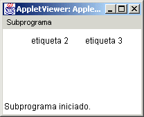
Observamos como es dificil entender que existe una etiqueta en blanco ahi, y que la tercera etiqueta está alineada al centro.
Mas adelante mostraremos de nuevo este applet, pero utilizando clases que nos pueden servir para mejorar nuestra interfaz haciendo uso de administradores de distribución que son llamados Layout Managers. Por ahora continuemos con otros elementos.
Pudiera quedarnos la duda de si ya creamos l1 como un objeto de la clase Label, pero sin etiqueta, como la pudieramos cambiar, esto lo hacemos a traves del método setText() ya manejado anteriormente, de tal manera que pudieramos utilizar l1.setText("etiqueta 1"); y asi cambiar nuestra etiqueta.
Campo Texto (TextField)
Un campo texto nos sirve para introducir un dato del usuario a nuestra aplicación, teniendo diferentes maneras de introducir un campo texto:
TextField(), TextField(int numChars), TextField(String str), TextField(String str, int numChars).
El primer constructor crea un campo texto, como ya lo hemos utilizado anteriormente, el segundo constructor nos sirve para definir el numero de caracteres que queremos puedan verse al introducir algun dato, el tercer constructor nos sirve para definir algun texto inicial que queramos le aparezca al usuario y el último constructor es para usar ambas opciones, que le aparezca al usuario un cierto texto inicialmente y tener un campo texto con una tantidad específica de caracteres a ver.
Un ejemplo del uso de estos constructores puede ser:
import java.awt.*;
import java.applet.*;
// <applet width="300" height="100" code="AppletInterfaz2"></applet>
public class AppletInterfaz2 extends Applet {
TextField t1, t2, t3, t4;
public AppletInterfaz2() {
t1 = new TextField();
t2 = new TextField(10);
t3 = new TextField("Texto3");
t4 = new TextField("Texto4",10);
add(t1);
add(t2);
add(t3);
add(t4);
}
}
Y la manera de visualizar esto sería:
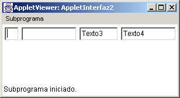
De esta forma observamos como el segundo y cuarto texto son más grandes debido al tamaño que le pusimos al constructor.
Botón (Button)
Con esta clase podemos definir algún botón para que el usuario de alguna acción que posteriormente pueda ser escuchada como un evento.
La forma de crear botones son:
Button (), Button(String str).
Crear un botón sin etiqueta o crear un botón con etiqueta. La manera de cambiar la etiqueta a un botón o de asignar una si no la tiene seria utilizando el método setLabel().
Una aplicación que muestra el uso de estos dos constructores seria:
import java.awt.*;
import java.applet.*;
// <applet width="200" height="100" code="AppletInterfaz3"></applet>
public class AppletInterfaz3 extends Applet {
Button b1, b2;
public AppletInterfaz3() {
b1 = new Button();
b2 = new Button("boton2");
add(b1);
add(b2);
}
}
La forma de visualizar esto es:
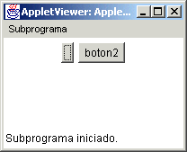
De esta manera podemos revisar las dos formas de crear un botón.
Opciones (Choice)
Esta clase nos ayuda a utilizar menús de opciones, donde el usuario fácilmente puede seleccionar una opción. La manera de hacer esto es con el constructor:
Choice().
Al crear un objeto de este tipo se le añaden las opciones que se desea aparezcan en el menú, utilizando el método add() o addItem() y de esta manera se van añadiendo las opciones al menu. Para saber que valor se selecciono se utiliza el método getSelectedItem() o el método getSelectedIndex(), el primero toma el String del elemento seleccionado y el seguno te da el índice del elemento seleccionado. Veamos una aplicación de este elemento gráfico:
import java.awt.*;
import java.applet.*;
import java.awt.event.*;
// <applet width="200" height="200" code="AppletInterfaz4"></applet>
public class AppletInterfaz4 extends Applet implements ItemListener{
Choice ch1, ch2;
public AppletInterfaz4() {
ch1 = new Choice();
ch2 = new Choice();
ch1.add("Primero");
ch1.add("Segundo");
ch1.add("Tercero");
ch1.add("Cuarto");
ch2.add("Uno");
ch2.add("Dos");
ch2.add("Tres");
ch2.add("Cuatro");
ch2.add("Cinco");
ch1.select("Cuarto");
add(ch1);
add(ch2);
ch1.addItemListener(this);
ch2.addItemListener(this);
}
public void itemStateChanged(ItemEvent ie) {
repaint();
}
public void paint(Graphics g) {
String msg = "Primer menu = ";
msg += ch1.getSelectedItem();
g.drawString(msg, 0,100);
msg = "Segundo menu = ";
msg += ch2.getSelectedItem();
g.drawString(msg, 0,140);
}
}
Algunos ejemplos utilizando este applet serian (incial y seleccionando otros valores):
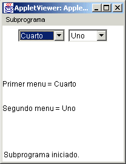 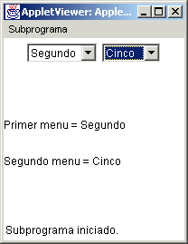
Además de los métodos mencionados para esta clase están getItemCount() que te da el número de elementos en la lista y hay otros más que te conviene revisar en la clase Choice.
Lista (List)
Esta clase provee una compacta lista de multiples opciones con el uso de la barra desplazadora. Los constructores de esta clase son:
List(), List( int lineas) , List (int lineas, boolean seleccionmúltiple).
El primer constructor crea una lista con el poder de selección de un dato a la vez, el segundo constructor especifica el número de lineas que serán visibles al mismo tiempo y el tercero con la opción de selección múltiple en true, permitirá que se puedan seleccionar mas de un elemento a la vez. El método add() puede ser utilizado para añadir elementos a la lista, pero tiene dos opciones, la de añadir un String o la de añadir un String en una cierta posición.
La siguiente es una aplicación que lo utiliza:
import java.awt.*;
import java.applet.*;
import java.awt.event.*;
// <applet width="300" height="200" code="AppletInterfaz5"></applet>
public class AppletInterfaz5 extends Applet implements ItemListener{
List ch1, ch2;
public AppletInterfaz5() {
ch1 = new List();
ch2 = new List();
ch1.add("Primero");
ch1.add("Segundo");
ch1.add("Tercero",0);
ch1.add("Cuarto",0);
ch2.add("Uno");
ch2.add("Dos");
ch2.add("Tres");
ch2.add("Cuatro");
ch2.add("Cinco");
add(ch1);
add(ch2);
ch1.addItemListener(this);
ch2.addItemListener(this);
}
public void itemStateChanged(ItemEvent ie) {
repaint();
}
public void paint(Graphics g) {
String msg = "Primera lista = ";
msg += ch1.getSelectedItem();
g.drawString(msg, 0,100);
msg = "Segunda lista = ";
msg += ch2.getSelectedItem();
g.drawString(msg, 0,140);
}
}
Y esto se mostrará de la siguiente manera (al inicio y con valores seleccionados):
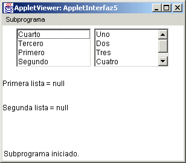 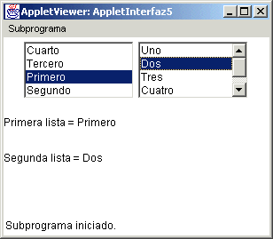
Area de Texto (TextArea)
Este elemento sirve para tomar datos o desplegar datos que tendrán más de una línea. Existen varios constructores:
TextArea(), TextArea(int lineas, int caracteres), TextArea(String str),
TextArea(String, str, int lineas, int caracteres), TextArea(String str, int lineas, int caracteres, int barra)
Donde lineas es el número de líneas, caracteres es el número de caracteres, str es el String que deseamos aparezca y barra puede ser uno de los siguientes: SCROLLBARS_BOTH, SCROLLBARS_HORIZONTAL_ONLY, SCROLLBARS_VERTICAL_ONLY, SCROLLBARS_NONE, donde estos se deben utilizar con el nombre de la clase como subfijo, ya que son constantes estáticas, ejemplo: TextArea.SCROLLBARS_BOTH.
Un ejemplo de aplicación que use esto seria:
import java.awt.*;
import java.applet.*;
// <applet width="400" height="400" code="AppletInterfaz6"></applet>
public class AppletInterfaz6 extends Applet {
TextArea ta1, ta2, ta3;
public AppletInterfaz6() {
ta1 = new TextArea();
ta2 = new TextArea("",10,12,TextArea.SCROLLBARS_HORIZONTAL_ONLY);
ta3 = new TextArea("",5,5,TextArea.SCROLLBARS_BOTH);
add(ta1);
add(ta2);
add(ta3);
}
}
La manera en la que se visualizaría es:
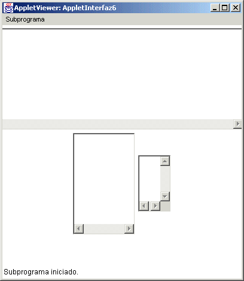
Existen otros elementos gráficos, es importante que entres a la biblioteca de clases de la awt en java para que te familiarices con ellas.
Administradores del Espacio
En Java se hace uso de los administradores de espacio LayoutManager, para poder presentar una buena distribución de los elementos gráficos y no tener necesidad de estar preocupandose por el tamaño de los botones, textos,etc. A continuación explicamos los más utilizados comunmente.
FlowLayout(). Esta clase es la que se define por default al hacer un applet y al añadir un elemento gráfico a la ventana del applet este se va creando de izquierda a derecha, de manera que se acomodan en la ventana.
Cuando se crea un applet se le puede definir que este es el Layout que se quiere con el método setLayout, ejemplo:
setLayout( new FlowLayout());
Y de esta manera es como se van añadiendo los elementos en la ventana.
GridLayout(). Esta clase permite que se definan elementos en la ventana a manera de renglones y colúmnas, como si fuera una cuadrícula, se definen el número de renglones y columnas y los espacios que se quiere dejar en pixeles entre los renglones y las columnas, cada vez que se añade algun elemento este aparece al lado derecho de la hilera en la que va, acomodándose por hilera, a continuación un ejemplo:
import java.awt.*;
import java.applet.*;
// <applet width="400" height="400" code="AppletInterfaz7"></applet>
public class AppletInterfaz7 extends Applet {
Button b1, b2, b3, b4, b5;
TextField t1, t2, t3, t4, t5;
public AppletInterfaz7() {
setLayout(new GridLayout(4, 3, 10, 10));
t1 = new TextField("a");
t2 = new TextField("b");
t3 = new TextField("c");
t4 = new TextField("d");
t5 = new TextField("e");
b1 = new Button("b1");
b2 = new Button("b2");
b3 = new Button("b3");
b4 = new Button("b4");
b5 = new Button("b5");
add(t1);
add(t2);
add(t3);
add(t4);
add(t5);
add(b1);
add(b2);
add(b3);
add(b4);
add(b5);
}
}
El cual se visualiza:
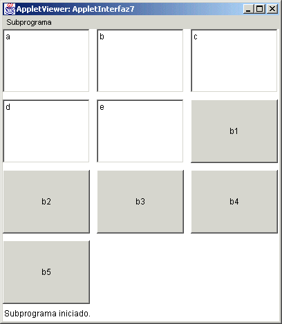
De esta manera vemos como se van acomodando los elementos de 3 en 3 por renglón, teniendo 4 renglones y 3 columnas.
BorderLayout(). Este nos sirve para poner los elementos por zonas, teniendo el Centro, Sur, Norte, Este y Oeste. Cada vez que añadimos un elemento debemos decir a que lugar lo mandamos, de la siguiente manera: add(elemento, BorderLayout.NORTH), o en lugar de NORTH puede ser SOUTH, EASTH, WEST, o CENTER.
Un ejemplo de esto sería:
import java.awt.*;
import java.applet.*;
// <applet width="400" height="400" code="AppletInterfaz8"></applet>
public class AppletInterfaz8 extends Applet {
Button b1, b2, b3;
TextField t1, t2;
public AppletInterfaz8() {
setLayout(new BorderLayout());
t1 = new TextField("a");
t2 = new TextField("b");
b1 = new Button("b1");
b2 = new Button("b2");
b3 = new Button("b3");
add(t1, BorderLayout.NORTH);
add(t2, BorderLayout.EAST);
add(b1, BorderLayout.WEST);
add(b2, BorderLayout.SOUTH);
add(b3, BorderLayout.CENTER);
}
}
En forma visual quedaria:
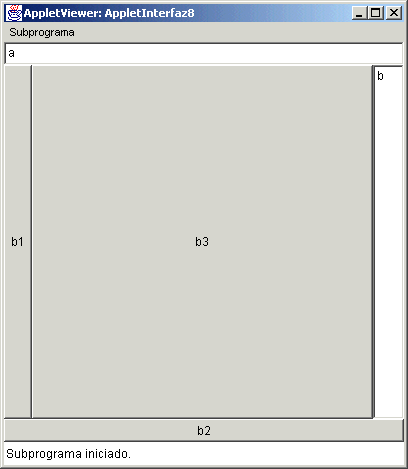 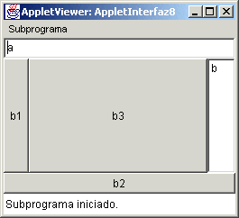
En el applet anterior se muestra como al cambiar de tamaño el applet los elementos gráficos se ajustan para esto, lo cual es una facilidad del Layout GridLayout y el BorderLayout.
Panel
Para la ayuda al manejar los elementos gráficos tenemos el Panel, que es la clase que nos permite tomar elementos gráficos en forma agrupada y se manejan como si fuera un solo elemento a la hora de añadirlos en una distribución (Layout).
Para crear un Panel solo se define este y al crearse se le define internamente la distribución de los elementos a mostrar, por ejemplo podemos decir que el panel 1 tiene un GridLayout como distribución y el panel 2 tiene un BorderLayout y que estos pertenecen a un FlowLayout como distribución general, tal como se muestra en el siguiente ejemplo:
import java.awt.*;
import java.applet.*;
// <applet width="400" height="200" code="AppletInterfaz9"></applet>
public class AppletInterfaz9 extends Applet {
Button b1, b2, b3, b4, b5;
TextField t1, t2, t3, t4, t5;
Panel p1, p2;
public AppletInterfaz9() {
setLayout(new FlowLayout());
p1 = new Panel(new GridLayout(2,2,10,10));
p2 = new Panel(new BorderLayout());
t1 = new TextField("a");
t2 = new TextField("b");
t3 = new TextField("c");
t4 = new TextField("d");
t5 = new TextField("e");
b1 = new Button("b1");
b2 = new Button("b2");
b3 = new Button("b3");
b4 = new Button("b4");
b5 = new Button("b5");
p1.add(t1);
p1.add(t2);
p1.add(t3);
p1.add(t4);
p1.add(t5);
p2.add(b1,BorderLayout.NORTH);
p2.add(b2, BorderLayout.EAST);
p2.add(b3, BorderLayout.WEST);
p2.add(b4, BorderLayout.SOUTH);
p2.add(b5, BorderLayout.CENTER);
add(p1);
add(p2);
}
}
El cual se visualiza asi:
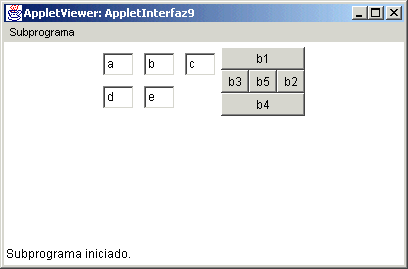
Es importante observar que una vez que definimos los paneles y añadimos los elementos a ellos, es importante NO OLVIDAR que debemos añadir los paneles al applet al final, por eso tenemos add(p1); y add(p2); al final.
1. Utilizando distribución de layouts diferentes, crea dos campos de texto, tres botones y una área de texto y grábalo con diferentes nombres, para que compares la visualización de los diferentes applets que realices (al mínimo 3).
http://java.sun.com/j2se/1.4.2/docs/api/ consultar Label, TextField, TextArea, Button, Panel, Choice, List, FlowLayout, BorderLayout, GridLayout.